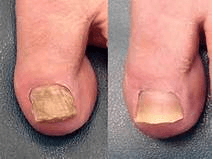

Тибетски практики в лечение на гъбички по ноктите
За ползата от тибетската медицина отдавна се разказват легенди. Нейните открития в медицината, наистина са уникални и изцяло се различават от стандартната медицина. Съставките на лекарствата са многообразни и често човек може да се изненада от странните комбинации, а освен това, лекарствата винаги се приготвят от напълно естесвени продукти. Това в пълна сила важи и в случаите, когато става въпрос за лекарства против гъбички. Въпреки многообразието на гъбичните инфекции, тибетската медицина успешно се справя и с всеки тип гъбички по ноктите.
Типове гъбички по ноктите
Отличават се 4 основни типа гъбичко по ноктите
В зависимост от вида на гъбичките, съществуват 4 вида инфекция
Дистална или дистално - латерална онихомикоза е най-распространеният вид гъбички по ноките. От краищата на нокътната плочка гъбичките проникват в сърцевината на нокътя, вследствие на което нокътят започва да променя цвета си, започва да се чупи и да изтънява

Проксимална субунгвална онихомикоза е по-рядък тип гъбички по ноктите. Инфекцията започва от кожичките около нокътя, след което достига до сърцевината на нокътя. В този случай се образуват бели петна и дупки по целия нокът.
Бяла повърхностна онихомикоза се проявява под формата на бели петна, образуване на ленти по нокътната плочка, които се движат дистално с растежа на нокътя. С времето те се уголемяват, увеличават и придобиват жълт цвят.
Общата дистрофична онихомикоза е вид гъбична инфекция, която разрушава цялата нокътна плочка - нокътят изглежда дебел, променя цвета и формата си.

Лечение при гъбички по ноктите в Тибет
Гъбичната инфекция е необичайно упорито заболяване, което изисква продължително и интензивно лечение. Традиционните мазила и кремове, чиито ефект продължава не повече от 10-15 минути след пълното попиване в кожата, могат да удължат процеса на лечение с месеци, при което дори и не унищожават вируса. В Тибет в борбата с гъбичките по ноктите от много години назад използват многостранен подход. Компреси, приготвени от смес от лечебни растения, които се носят непрекъснато от болния в течение на няколко месеца, имат силата напълно да отстранят вируса.
Днес някои от тибетските лекарства с успех се продават по цял свят. В това число и лекарства против гъбички. …. е натурален препарат, създаден на основата на тибетски практики против гъбички по ноктите. Крем изцяло е създаден по древна рецепта за лечение. Формулата, която от векове се използва от тибетските монахи, е в основааа на състава на крем ….
Клинично доказано е, че средставата, които използва тибетската медицина в борбата с гъбичките по ноктите, са до 5 пъти по-ефективни от традиционните средства, които се продават в аптеките.
Крем е със 100% натурален състав. Основните съставки са:
Концентрат от черен оман - това природен антибиотик, който се бори с гъбичките и освен това помага на раните да зарастват по-бързо.
Екстрат от лапачо - той укрепва имунната система, подобрява кръвообращението и намалява възпалителния процес.
Екстрат от гъба рейши - помага за заздравителния процес на тъканите, ускорява процеса на въстановяването на клетките.
Пчелно млечице - оказва омекотяващ ефект, успокоява кожата, помага при заздравяването на напуканата кожа.
Екстрат от нар - бързо премахва сърбежа и болезнените усещания.
Концентрат от потайнице - подобрява еластичността на кожата, въстановява водния баланс на клетките, омекотява кожата.
Гъбичките по ноктите са едно от най-бавно протичащите заболявания, чието развитие обичайно преминава почти незабелязано. И все пак невниманието към собственото здраве често има много неприятни последствия. Повече от 70% от заболелите от гъбична инфекция и не обърнали достатъчно внимание на заболяването, напълно или частично губат своите нокти. Грижете се за себе си и бъдете здрави!

В борбата с гъбичките по стъпалата крем . е едно от най-ефективните средства. Той се отличава от другите противогъбични средства с това, че оказва въздействие не само на симптомите на микозата, а и на двете проблемни зона - стъпалата и ноктите. Крем притежава силно противовъзпалително действие, бори се с микробите и има закрепващо действие, освен това оказва заздравяващо действие на имунната система. Наскоро започнах да препоръчвам крем на своите пациенти на само за лечение, но и за профилактика против гъбички по ноктите и стъпалата. И вече получавам положителни отзиви.


